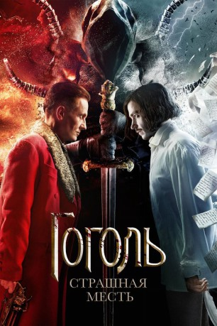

#11466 Chroniken der Finsternis 3 - Blutige Rache
Alternativ: Gogol. Strashnaya mest (Englischer Titel)
 
 IMDB-Wertung: 5.9 / 10
IMDB-Wertung: 5.9 / 10  Metascore: 0
Metascore: 0 
Das Jahr 1829. Der junge Schreiber Nikolai Gogol, der eine Schaffenskrise erlebt und seine vermeintliche Talentlosigkeit feststellt, verbrennt seine Manuskripte und fängt an, zu trinken. In dieser Zeit bringt das Schicksal den Literaten mit dem bekannten Ermittler Jakow Petrowitsch Guro zusammen. Der Ermittler fährt ins Dorf Dykanka bei Poltawa, wo er das Geheimnis einer Mordserie an jungen Frauen aufdecken soll. Guro sieht bei Gogol eine besondere Gabe und nimmt ihn mit. Außerdem steht das Leben von Gogols Geliebter Lisa auf dem Spiel. Den mächtigen Hexer zu besiegen, den dunklen Mächten Einhalt zu gebieten und den alten Fluch zu überwinden, schaffte noch kein Sterblicher, aber Gogol muss bis ans Ende gehen.
Jahr: 2018
Dauer: 106 Minuten
FSK: 16
Land: Russland Studio: Karo FilmTonspuren:
Untertitel: Deutsch,
Auflösung: 1080p (1920x800) Größe: 5447 MB
Genre: Thriller, Abenteuer, Mystery
Regisseur: Egor Baranov
Drehbuch: Aleksey Chupov, Natalya Merkulova
Soundtrack: Ryan Otter
Darsteller:
 Alexander Petrov als Gogol Nikolai Vasilievich
Alexander Petrov als Gogol Nikolai Vasilievich- Oleg Menshikov als Guro
- Evgeniy Stychkin als Binkh
- Artyom Suchkov als Tesak
- Taisiya Vilkova als Liza
- Yuliya Frants als Oksana
- Yan Tsapnik als Bomgart
- Evgeniy Sytyy als Yakim
- Sergey Badyuk als Vakula
- Artyom Tkachenko als Danishevskiy
- Marta Timofeeva als Vasilina
- Kirill Zaytsev als Kazimir
- Pavel Derevyanko als Pushkin
- Dana Abyzova als Mariya
- Oleg Gayanov als Danila the Ataman
- Vsevolod Tsurilo als Taras
- Anvar Libabov als Noseless
- Yuliya Marchenko als Gogol's Mother
- Andrey Astrakhantsev als Gogol's Father
- Dmitriy Sidorov als Devil
- Askar Nigamedzyanov als Lermontov
- Lyudmila Lebedeva als Old Woman the Recluse
Datei: X:\3-Trilogie(A-F)\Chroniken der Finsternis\Chroniken der Finsternis 3 - Blutige Rache (2018, FSK16, 1920x800).mkv seit 13.07.2019
Festplatte: HD Collection-2(A-Z)-3(A-M)
 Alle Filme aus Gruppe '3-Trilogie(A-F)\Chroniken der Finsternis'
Alle Filme aus Gruppe '3-Trilogie(A-F)\Chroniken der Finsternis'